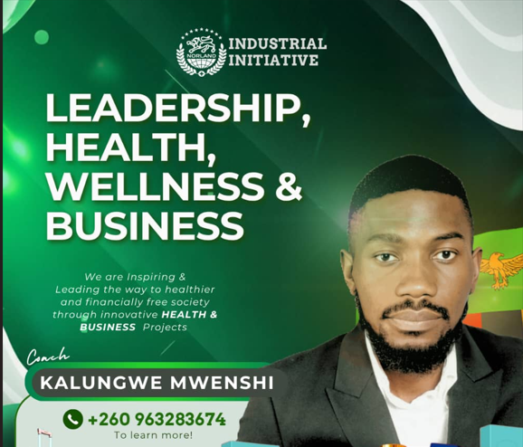

Latest News
Livingstone Zambia Takes the Lead in Restoration Wellness
October 25, 2025 • By Benno B.Mwitumba • 2 min read

Dotcom Wellness is a community of like minds focussed on health and business projects in betterment of health of the community and ultimately creating stable income genrating opportunities for the locals originating from Livingstone, Zambia, in partnership with Tanzania’s health and e-commerce leader VitasphereOnline and the global high-tech regenerative medicines conglomerate, Norland Industrial Group. This pioneering network is redefining the future of health, wealth, and business across Africa. At the core of their mission are regenerative supplements and medicines designed to enhance vitality, longevity, and peak performance.
These innovators are not merely creating products they are cultivating a culture of wellness that empowers leaders to excel in every area of life. By integrating health and business acumen, they prove that true success begins from within. Every member becomes a catalyst, learning to optimize mind, body, and finances simultaneously. The community fuses cutting-edge science with practical business strategies, giving entrepreneurs a blueprint to scale personal and professional growth. Collaboration is key, connecting health pioneers with investors, innovators, and thought leaders.
In a world plagued by chronic illness and business burnout, Dotcom Wellness offers a holistic solution. Members gain access to exclusive regenerative formulas that elevate energy, focus, and resilience. The movement’s impact extends far beyond Livingstone, positioning Africa as a global hub for wellness innovation. Through mentorship and education, it cultivates leaders who prioritize sustainable success. Every initiative challenges the status quo, demonstrating that wellness and wealth are inseparable. Dotcom Wellness is not just transforming individuals it’s shaping Africa’s thriving economy and future leadership.
Read Full Article